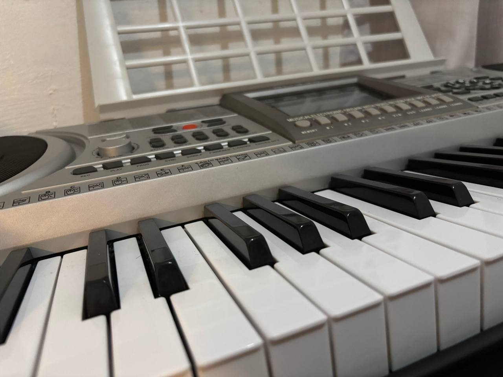
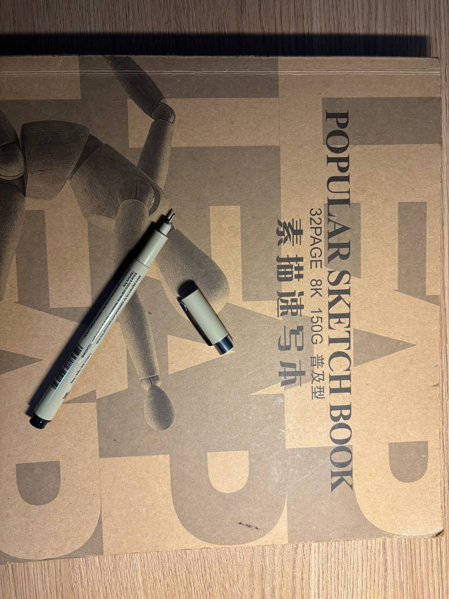
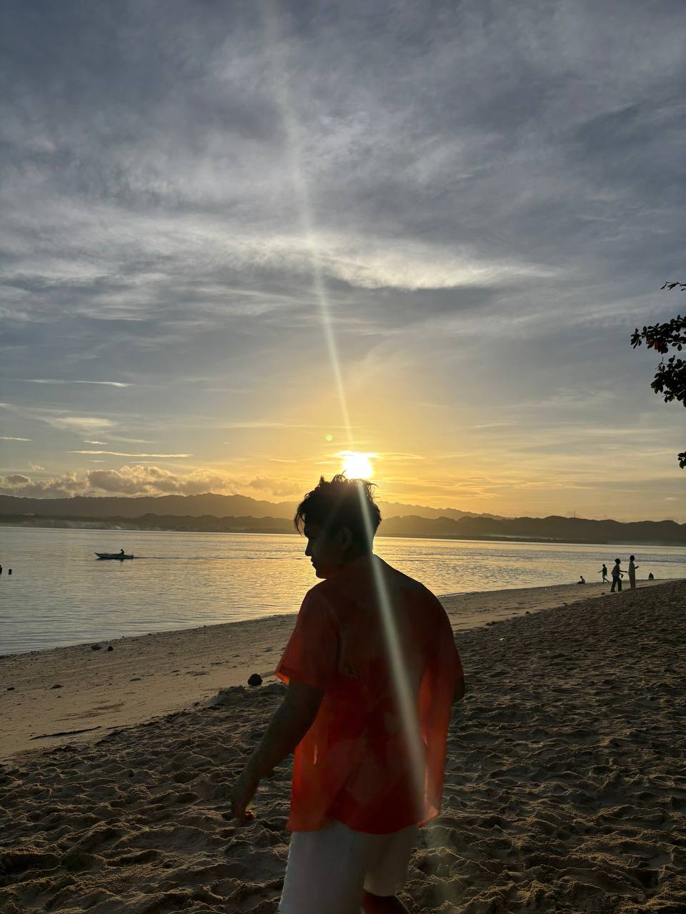

There are plenty of activities out there that I find interesting and fun. But if I were to choose only three, my favorite ones would be:

I’ve been having a blast diving into the piano lately; there’s just something so satisfying about finally hitting those notes right. Now, I’m getting hyped to start messying around with a DAW to see what kind of tracks I can produce on my own. It's all about finding that perfect mix between playing live and building something cool digitally.

Drawing is my go-to move for clearing my head and just letting go of any stress from the day. I’ve recently started playing around with pastels to add some new textures and pops of color to my sketches. It’s less about making a masterpiece and more about the vibe of creating something raw and expressive.

I’m a total sucker for a good trip, and I’m already counting down the days until I can hit a beautiful beach this summer. I’ve also got my sights set on Vietnam later in the year for some epic food and new scenery. For me, there's nothing better than packing a bag and heading off to see somewhere I've never been before.